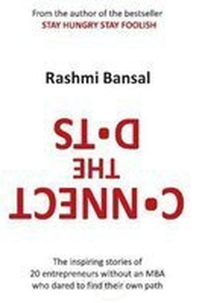

Library › Business & Startups
Connect the Dots — Summary & Key Lessons

20 non-IIT, non-IIM founders — no degree, no problem, just jugaad and hustle.
📖 OPEN THE FULL INTERACTIVE BREAKDOWN →🌐 Read it in Hindi, Hinglish, Gujarati, Tamil & 22 more languages — free, with audio.
💡 The Big Idea
The sequel to Stay Hungry Stay Foolish profiles 20 entrepreneurs who never went to IIT or IIM — the 'jugaad' generation of Indian business. Bansal's message: formal education is not the only path to success. These founders — a dhobi's son building a textile empire, a college dropout running a chain of cafés, a woman starting a business from her kitchen — connected the dots of their own lives: skills learned on the street, failures that taught more than degrees, and an undying willingness to hustle. The book celebrates the Indian dream in its most authentic form: talent + hunger + hard work, minus the pedigree.
🧠 The 6 Key Lessons
Lesson 1: Your Background Is Not Your Ceiling
1: No Degree, No Problem
Bansal's founders come from small towns, poor families, and educational systems that failed them. Yet they built businesses that educated elite graduates couldn't. The lesson: what you know from lived experience — managing scarcity, negotiating in markets, understanding real customers — is a curriculum no university offers. Society sells the idea that pedigree determines destiny, but the marketplace only pays for results. Your background may determine your starting point, but it does not set your destination. The dot of a hard childhood connects to the dot of a sharp business instinct.
📖 Example: She profiles a founder from a village who sold his family's only assets to start a trading business — and built one of the largest textile companies in his region. His 'education' was watching his mother stretch a rupee; his empire stretched millions. Read the full example →
⚡ Do this: List 3 skills your life experience gave you that no classroom could. Build your business around one of them.
Lesson 2: Jugaad Is a Strategy, Not a Hack
2: The Jugaad Mindset
Jugaad — the art of making something work with whatever you have — is often dismissed as a shortcut. Bansal reframes it as an entrepreneurial superpower: the ability to solve problems with minimal resources, improvise in real time, and find opportunity in constraint. Indian founders routinely build businesses with 1/10th the capital of their global peers because they optimize for survival first. Jugaad teaches you to ask 'what CAN I do with this?' instead of 'what do I need?'. In a resource-constrained world, the jugaad mindset is not a compromise — it is a competitive advantage.
📖 Example: A founder started a logistics business with a single borrowed scooter, negotiating with shop owners to let him deliver their goods. Each improvisation — sharing space, bundling orders — became a service his larger competitors later had to copy. Read the full example →
⚡ Do this: Take your current biggest obstacle and force yourself to solve it with only the resources you already own. No new spending.
Lesson 3: Hustle: The Art of Relentless Asking
3: The Hustle
Every founder in this book shares one trait: an uncomfortable willingness to ask. Ask for the order, the discount, the referral, the second chance. Bansal shows that in Indian markets, the difference between survival and success is often simply the number of doors knocked. Rejection is a cost of doing business, not a verdict on your worth. The hustler treats 'no' as a receipt — proof that they asked, and one step closer to a 'yes'. Confidence is not something you wait for; it is something you build by asking and surviving the answers.
📖 Example: One founder got his first big contract by calling the same client every week for six months. The client finally said yes out of sheer respect for persistence — and that contract funded the next decade of the business. Read the full example →
⚡ Do this: Make 5 'asks' today — a discount, an introduction, a meeting, an order. Treat every no as data, not defeat.
Lesson 4: Serve the Customer You Actually Have
4: Customer First
Bansal's non-elite founders succeed because they serve real, local, unglamorous customers — the ones global brands ignore. A chai wallah chain, a vernacular newspaper, a middle-class furniture store: these businesses thrive by understanding the price sensitivity, trust needs and habits of their actual market. The lesson is brutal for fancy startups: your idea of the customer is not the customer. The founders who listen — who walk the shop floor, take complaints personally, and price for India — build loyalty that no discount can buy. Serve the customer in front of you, not the one in your pitch deck.
📖 Example: A founder of a fast-food chain in small-town India discovered his customers shared plates — so he priced accordingly and doubled portion sizes. The 'premium' model would have failed; the listening model printed money. Read the full example →
⚡ Do this: Spend 2 hours this week talking to 5 real customers with zero agenda. Write down what they actually say, not what you hoped.
Lesson 5: The Power of Small Towns
5: Bharat Rising
Bansal dedicates a section to founders building in tier-2 and tier-3 India — where costs are low, competition is lazy, and loyalty is fierce. These towns are not 'second-class markets'; they are the future. A business that cracks a small town — its trust networks, its word-of-mouth speed, its price points — graduates with a model ready for scale. Meanwhile, founders in metros often drown in high rent and high expectations. The lesson: build where the noise is less and the need is more. Bharat is not waiting for metros to catch up; it is already ahead in hunger.
📖 Example: She tells of a coaching institute started in a small town that grew to serve students across three states — because the founder priced for local families and hired local teachers the community already trusted. The metro competitors couldn't enter on those… Read the full example →
⚡ Do this: Ask: 'Is there a smaller town or niche segment where my product would be even more valuable?' Investigate this week.
Lesson 6: Connect the Dots — Trust Your Own Story
6: The Pattern
The book's title is its final lesson: looking back, every founder's life makes sense — the odd jobs, the failures, the lessons — but looking forward, it never does. You cannot connect the dots ahead of time; you can only trust that your experiences are accumulating into something. Bansal's founders didn't have a master plan; they had a direction and a willingness to keep moving. The dots connect when you commit to the journey and keep collecting experiences. Your unusual path — the one that looks random from the outside — may be precisely the pattern your future business needs.
📖 Example: A founder's journey — from selling vegetables as a child, to a phone-repair shop, to a services company — looks chaotic until you see the thread: he always knew how to fix what was broken and charge fairly for it. The dots connected into a business only in… Read the full example →
⚡ Do this: Write your own life timeline — every job, failure and skill — and look for the hidden thread. That thread is your unfair advantage.
✅ 5-Step Action Plan
- Identify the one life-skill your background gave you and build around it.
- Solve this week's biggest obstacle with only existing resources.
- Make 5 asks daily — treat every no as tuition.
- Talk to 5 real customers with zero agenda; write down their words.
- Map your life timeline and find the hidden thread — that's your edge.
💬 Best Quotes from Connect the Dots
- “You don't need a degree to have a dream.”
- “Jugaad is not a shortcut — it's a way of seeing opportunity in constraint.”
- “The dots only connect backwards. Trust your journey.”
Interactive version: mark lessons as read, listen in your language, share quote cards.